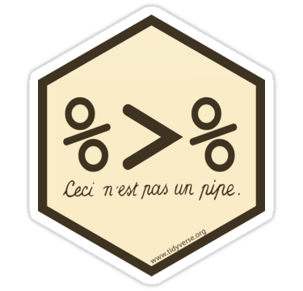
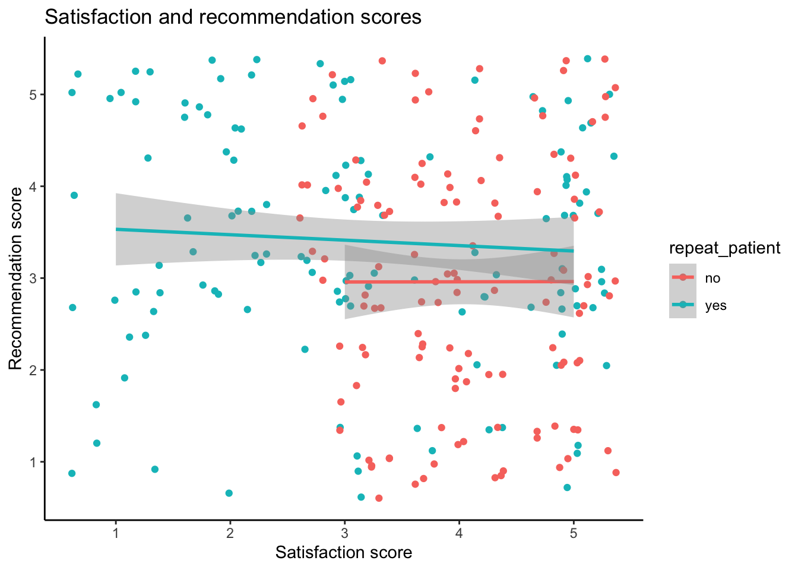

Chapter 7 Data Tidying
7.1 Intended Learning Outcomes
- Be able to reshape data between long and wide formats
- Separate, change, reorder, and rename columns
- Use pipes to chain together functions
In this chapter we'll use the following packages:
library(tidyverse) # for data wrangling7.2 Set-up
First, create a new project for the work we'll do in this chapter named 07-tidy. Second, open and save and new R Markdown document named tidy.Rmd`, delete the welcome text and load the required packages for this chapter.
7.3 Data Structures
The data you work with will likely come in many different formats and structures. Some of these structures may be driven by how the software you use outputs the data, but data structures may also differ because of human intervention or attempts at organisation, some of which may not be particularly helpful.
Data cleaning and tidying will likely be the most time consuming and difficult task you perform. Whilst you can create code recipes for analyses and visualisations, as Hadley Whickham puts it "every messy dataset is messy in its own way" which means that you will often have to solve new problems that are specific to the dataset. Additionally, moving between data structures that are intuitive to read by humans and those that are useful for a computer requires a conceptual shift that only comes with practice. This is all a verbose way of saying that what lies ahead in this chapter is unlikely to sink in on the first attempt and you will need to practice with different examples (preferably with data you know well) before you truly feel comfortable with it.
First, some terminology.
An observation is all the information about a single "thing" at a single point in time. These things can be customers, sales, orders, feedback questionnaires, tweets, or really anything. Observations should have a way to identify them, such as a unique ID or combination of variable values.
A variable is one type of information about the observation. For example, if the observation is a sale, the variables you might have about the sale are the sale ID, the customer's ID, the date of the sale, the price paid, and method of payment.
A value is the data for one variable for one observation. For example, the value of the date variable from the observation of a sale might be 2021-08-20.
The following table is data from an experiment where participants' reactions times are tested on two separate occasions.
| Participant | RT - test 1 | RT - test 2 | RT - test 3 |
|---|---|---|---|
| 1 | 356 | 850 | 400 |
| 2 | 456 | 780 | 541 |
| 3 | 471 | 668 | 522 |
| 4 | 510 | 1020 | 850 |
- What is
356? - What is test time?
- How many variables are there in this dataset?
- There are three variables, Participant, Reaction time, and test time. Even though test time is spread out across three columns, it is still one variable.
356is a value because it is a single data point for one variable for one observation.
7.3.1 Untidy data
First, let's have a look at an example of a messy, or untidy, dataset. Each row has all of the data relating to one customer.
- The
itemsprice_{year}columns contain two values (number of items and price per item) - The
totalprice_{year}columns contain the total amount spent by that customer that year, i.e., item * price. - There is data for three different years in the dataset.
| customer_id | itemsprice_2018 | itemsprice_2019 | itemsprice_2020 | totalprice_2018 | totalprice_2019 | totalprice_2020 |
|---|---|---|---|---|---|---|
| 1 | 2 (3.91) | 8 (4.72) | 10 (5.59) | 7.82 | 37.76 | 55.90 |
| 2 | 1 (3.91) | 6 (4.72) | 1 (5.59) | 3.91 | 28.32 | 5.59 |
| 3 | 4 (3.91) | 5 (4.72) | 5 (5.59) | 15.64 | 23.60 | 27.95 |
| 4 | 10 (3.91) | 1 (4.72) | 3 (5.59) | 39.10 | 4.72 | 16.77 |
| 5 | 3 (3.91) | 9 (4.72) | 8 (5.59) | 11.73 | 42.48 | 44.72 |
Let's say you wanted to calculate the total price per customer over the three years and the total number of items bought per customer. You can't perform mathematical operations on the itemsprice_{year} columns because they are character data types.
You would probably normally use Excel to
- split
itemsprice_2018column intoitem_2018andprice_2018columns - split
itemsprice_2019column intoitem_2019andprice_2019columns - split
itemsprice_2020column intoitem_2018andprice_2020columns - add
item_2018 + item_2019 + item_2020to get the total number of items bought per customer - add
totalprice_2018 + totalprice_2019 + totalprice_2020to get the total price per customer
Think about how many steps in Excel this would be if there were 10 years in the table, or a different number of years each time you encountered data like this.
7.3.2 Tidy data
There are three rules for "tidy data", which is data in a format that makes it easier to combine data from different tables, create summary tables, and visualise your data.
- Each observation must have its own row
- Each variable must have its own column
- Each value must have its own cell
This is the tidy version:
- There are now five variables (columns) because there are five different types of information we have on each customer, their id, the year, number of items bought, price per item, and total price. Even though there's multiple values in each one, these values all correspond to just five different types of information.
- Each row is a customer's orders in a particular year.
- The number of items (
items) and price per item (price_per_item) are in separate columns, so now you can perform mathematical operations on them.
| customer_id | year | items | price_per_item | totalprice |
|---|---|---|---|---|
| 1 | 2018 | 2 | 3.91 | 7.82 |
| 1 | 2019 | 8 | 4.72 | 37.76 |
| 1 | 2020 | 10 | 5.59 | 55.90 |
| 2 | 2018 | 1 | 3.91 | 3.91 |
| 2 | 2019 | 6 | 4.72 | 28.32 |
| 2 | 2020 | 1 | 5.59 | 5.59 |
| 3 | 2018 | 4 | 3.91 | 15.64 |
| 3 | 2019 | 5 | 4.72 | 23.60 |
| 3 | 2020 | 5 | 5.59 | 27.95 |
| 4 | 2018 | 10 | 3.91 | 39.10 |
| 4 | 2019 | 1 | 4.72 | 4.72 |
| 4 | 2020 | 3 | 5.59 | 16.77 |
| 5 | 2018 | 3 | 3.91 | 11.73 |
| 5 | 2019 | 9 | 4.72 | 42.48 |
| 5 | 2020 | 8 | 5.59 | 44.72 |
To calculate the total price per customer over the three years and the total number of items bought per customer in R, you could then:
- group the table by customer_id
- sum the
itemscolumn to get the total number of items bought per customer - sum the
totalpricecolumn to get the total price per customer
tidy_data <- read_csv("data/tidy_data.csv")
tidy_data %>%
group_by(customer_id) %>%
summarise(
total_items = sum(items),
total_price = sum(totalprice)
)| customer_id | total_items | total_price |
|---|---|---|
| 1 | 20 | 101.48 |
| 2 | 8 | 37.82 |
| 3 | 14 | 67.19 |
| 4 | 14 | 60.59 |
| 5 | 20 | 98.93 |
It also makes it very easier to use with ggplot() - try running each of the following plots.
# all years
ggplot(tidy_data, aes(x = totalprice)) +
geom_histogram(binwidth = 10, colour = "black")
# different fill on one plot for each year
ggplot(tidy_data, aes(x = totalprice, fill = as.factor(year))) +
geom_histogram(binwidth = 10, colour = "black")
ggplot(tidy_data, aes(x = totalprice, fill = as.factor(year))) +
geom_histogram(binwidth = 10,
colour = "black",
show.legend = FALSE) +
facet_wrap(~year)If there were 10 years in the table, or a different number of years each time you encountered data like this, the code for producing the tables and plots above never changes.
If you have control over how the data are recorded, it will make your life easier to record it in a tidy format from the start. However, we don't always have control, so this class will also teach you how to convert untidy tables into tidy tables.
7.4 Reshaping Data
Data tables can be in wide format or long format (or a mix of the two). Wide data are where all of the observations about one thing are in the same row, while long data are where each observation is on a separate row. You often need to convert between these formats to do different types of summaries or visualisation. You may have done something similar using pivot tables in Excel.
Figure 7.1: Converting between wide and long formats using pivot tables in Excel.
It can be easier to just consider one type of measurement at a time. untidy_data has two types of measurements, total price and price per time. Let's look at just the totalprice data first.
We can select just the columns we want using the dplyr::select() function. This function's first argument is the data table you want to select from, then each argument after that is either the name of a column in that table, or new_name = old_name. This is a useful function for changing the column names and order of columns, as well as selecting a subset of columns. Note that because the names of the columns are numbers, they need to be wrapped in backticks otherwise it won't work.
# select just the customer ID and 3 total price columns
untidy_price <- select(
.data = untidy_data,
customer_id,
`2018` = totalprice_2018,
`2019` = totalprice_2019,
`2020` = totalprice_2020
)| customer_id | 2018 | 2019 | 2020 |
|---|---|---|---|
| 1 | 7.82 | 37.76 | 55.90 |
| 2 | 3.91 | 28.32 | 5.59 |
| 3 | 15.64 | 23.60 | 27.95 |
| 4 | 39.10 | 4.72 | 16.77 |
| 5 | 11.73 | 42.48 | 44.72 |
This is in wide format, where each row is a customer, and represents the data from several years. This is a really intuitive way for humans to read a table, but it's not as easy for a computer to process it.
The same data can be represented in a long format by creating a new column that specifies what year the observation is from and a new column that specifies the totalprice of that observation. This is easier to use to make summaries and plots.
| customer_id | year | totalprice |
|---|---|---|
| 1 | 2018 | 7.82 |
| 2 | 2018 | 3.91 |
| 3 | 2018 | 15.64 |
| 4 | 2018 | 39.10 |
| 5 | 2018 | 11.73 |
| 1 | 2019 | 37.76 |
| 2 | 2019 | 28.32 |
| 3 | 2019 | 23.60 |
| 4 | 2019 | 4.72 |
| 5 | 2019 | 42.48 |
| 1 | 2020 | 55.90 |
| 2 | 2020 | 5.59 |
| 3 | 2020 | 27.95 |
| 4 | 2020 | 16.77 |
| 5 | 2020 | 44.72 |
Create a long version of the following table of how many million followers each band has on different social media platforms. You don't need to use code, just sketch it in a notebook or make a table in a spreadsheet.
| band | ||
|---|---|---|
| The Beatles | 3.8 | 3.8 |
| The Rolling Stones | 3.4 | 3.1 |
| One Direction | 31.3 | 22.8 |
Your answer doesn't need to have the same column headers or be in the same order.
| account | social_media | followers |
|---|---|---|
| The Beatles | 3.8 | |
| The Beatles | 3.8 | |
| The Rolling Stones | 3.4 | |
| The Rolling Stones | 3.1 | |
| One Direction | 31.3 | |
| One Direction | 322.8 |
If you're a researcher and you're used to thinking about IVs and DVs, you may find it easier to remember that each IV and DV should have it's own column, rather than each level of the IV.
The pivot functions allow you to transform a data table from wide to long or long to wide.
7.4.0.1 Wide to long
The function pivot_longer() converts a wide data table to a longer format by converting the headers from specified columns into the values of new columns, and combining the values of those columns into a new condensed column.
This function has several arguments:
cols: the columns you want to make long; you can refer to them by their names, likec(`2018`, `2019`, `2020`)or`2018`:`2020`or by their numbers, likec(2, 3, 4)or2:4names_to: what you want to call the new columns that thecolscolumn header names will go intovalues_to: what you want to call the new column that contains the values in thecols
With the pivot functions, it can be easier to show than tell - run the below code and then compare untidy_price with untidy_price_long and the pivot code and try to map each argument to what has changed.
untidy_price_long <- pivot_longer(
data = untidy_price,
cols = `2018`:`2020`, # columns to make long
names_to = "year", # new column name for headers
values_to = "totalprice" # new column name for values
)| customer_id | year | totalprice |
|---|---|---|
| 1 | 2018 | 7.82 |
| 1 | 2019 | 37.76 |
| 1 | 2020 | 55.90 |
| 2 | 2018 | 3.91 |
| 2 | 2019 | 28.32 |
| 2 | 2020 | 5.59 |
| 3 | 2018 | 15.64 |
| 3 | 2019 | 23.60 |
| 3 | 2020 | 27.95 |
| 4 | 2018 | 39.10 |
| 4 | 2019 | 4.72 |
| 4 | 2020 | 16.77 |
| 5 | 2018 | 11.73 |
| 5 | 2019 | 42.48 |
| 5 | 2020 | 44.72 |
7.4.0.2 Long to wide
We can also go from long to wide format using the pivot_wider() function.
names_from: the columns that contain your new column headers.values_from: the column that contains the values for the new columns.names_sep:the character string used to join names ifnames_fromis more than one column.
untidy_price_wide <- pivot_wider(
data = untidy_price_long,
names_from = year,
values_from = totalprice
)| customer_id | 2018 | 2019 | 2020 |
|---|---|---|---|
| 1 | 7.82 | 37.76 | 55.90 |
| 2 | 3.91 | 28.32 | 5.59 |
| 3 | 15.64 | 23.60 | 27.95 |
| 4 | 39.10 | 4.72 | 16.77 |
| 5 | 11.73 | 42.48 | 44.72 |
7.5 Multi-step tidying
You often need to go from wide, to long, to an intermediate shape in order to get your data into a format that is useful for plotting, where there is a column for each variable that you want to represent with an aesthetic.
Our full untidy_data table has seven columns: a customer ID, three columns for itemsprice and 3 columns for totalprice.
| customer_id | itemsprice_2018 | itemsprice_2019 | itemsprice_2020 | totalprice_2018 | totalprice_2019 | totalprice_2020 |
|---|---|---|---|---|---|---|
| 1 | 2 (3.91) | 8 (4.72) | 10 (5.59) | 7.82 | 37.76 | 55.90 |
| 2 | 1 (3.91) | 6 (4.72) | 1 (5.59) | 3.91 | 28.32 | 5.59 |
| 3 | 4 (3.91) | 5 (4.72) | 5 (5.59) | 15.64 | 23.60 | 27.95 |
| 4 | 10 (3.91) | 1 (4.72) | 3 (5.59) | 39.10 | 4.72 | 16.77 |
| 5 | 3 (3.91) | 9 (4.72) | 8 (5.59) | 11.73 | 42.48 | 44.72 |
We want to get it into the tidy format below where each row is an observation of one customer per year, with the columns of customer_id, year, item, price_per_item and totalprice. Before trying to reshape any dataset, you should be able to visualise what it will look like. Sketching out your tables on a piece of paper can really help make these transformations make sense.
| customer_id | year | items | price_per_item | totalprice |
|---|---|---|---|---|
| 1 | 2018 | 2 | 3.91 | 7.82 |
| 1 | 2019 | 8 | 4.72 | 37.76 |
| 1 | 2020 | 10 | 5.59 | 55.90 |
| 2 | 2018 | 1 | 3.91 | 3.91 |
| 2 | 2019 | 6 | 4.72 | 28.32 |
| 2 | 2020 | 1 | 5.59 | 5.59 |
| 3 | 2018 | 4 | 3.91 | 15.64 |
| 3 | 2019 | 5 | 4.72 | 23.60 |
| 3 | 2020 | 5 | 5.59 | 27.95 |
| 4 | 2018 | 10 | 3.91 | 39.10 |
| 4 | 2019 | 1 | 4.72 | 4.72 |
| 4 | 2020 | 3 | 5.59 | 16.77 |
| 5 | 2018 | 3 | 3.91 | 11.73 |
| 5 | 2019 | 9 | 4.72 | 42.48 |
| 5 | 2020 | 8 | 5.59 | 44.72 |
7.5.1 One observation per row
The original table has observations from each customer over three years. This is too many observations per row, so first we'll start by making the table long. We need to make 6 rows for each customer, one for each category (item price/total price) and year combination, with columns for the customer ID, year, category, and value.
Because we'll be combining columns with numeric (totalprice) and character (itemsprice) data, we need to make the new value column a character data type using values_transform, since numbers can be represented as characters (like "3.5"), but character strings can't be represented as numbers.
longer_data <- pivot_longer(
data = untidy_data,
cols = itemsprice_2018:totalprice_2020, # columns to make long
names_to = c("category", "year"), # new column names for cols
names_sep = "_", # how to split cols into new columns
# names_pattern = "(.*)_(.*)", # alternative to names_sep
values_to = "value", # new column name for values
# make sure new columns are the right data type
names_transform = list(year = as.integer),
values_transform = list(value = as.character)
)| customer_id | category | year | value |
|---|---|---|---|
| 1 | itemsprice | 2018 | 2 (3.91) |
| 1 | itemsprice | 2019 | 8 (4.72) |
| 1 | itemsprice | 2020 | 10 (5.59) |
| 1 | totalprice | 2018 | 7.82 |
| 1 | totalprice | 2019 | 37.76 |
| 1 | totalprice | 2020 | 55.9 |
| 2 | itemsprice | 2018 | 1 (3.91) |
| 2 | itemsprice | 2019 | 6 (4.72) |
| 2 | itemsprice | 2020 | 1 (5.59) |
| 2 | totalprice | 2018 | 3.91 |
| 2 | totalprice | 2019 | 28.32 |
| 2 | totalprice | 2020 | 5.59 |
| 3 | itemsprice | 2018 | 4 (3.91) |
| 3 | itemsprice | 2019 | 5 (4.72) |
| 3 | itemsprice | 2020 | 5 (5.59) |
| 3 | totalprice | 2018 | 15.64 |
| 3 | totalprice | 2019 | 23.6 |
| 3 | totalprice | 2020 | 27.95 |
| 4 | itemsprice | 2018 | 10 (3.91) |
| 4 | itemsprice | 2019 | 1 (4.72) |
| 4 | itemsprice | 2020 | 3 (5.59) |
| 4 | totalprice | 2018 | 39.1 |
| 4 | totalprice | 2019 | 4.72 |
| 4 | totalprice | 2020 | 16.77 |
| 5 | itemsprice | 2018 | 3 (3.91) |
| 5 | itemsprice | 2019 | 9 (4.72) |
| 5 | itemsprice | 2020 | 8 (5.59) |
| 5 | totalprice | 2018 | 11.73 |
| 5 | totalprice | 2019 | 42.48 |
| 5 | totalprice | 2020 | 44.72 |
7.5.2 One variable per column
Now the value column contains data from two different variables. We need to make the table wider, but not as wide as before. We want to keep the year column and make new columns called itemsprice and totalprice with the relevant customer's value for that variable and year.
wider_data <- pivot_wider(
data = longer_data,
id_cols = c(customer_id, year),
names_from = category,
values_from = value
)| customer_id | year | itemsprice | totalprice |
|---|---|---|---|
| 1 | 2018 | 2 (3.91) | 7.82 |
| 1 | 2019 | 8 (4.72) | 37.76 |
| 1 | 2020 | 10 (5.59) | 55.9 |
| 2 | 2018 | 1 (3.91) | 3.91 |
| 2 | 2019 | 6 (4.72) | 28.32 |
| 2 | 2020 | 1 (5.59) | 5.59 |
| 3 | 2018 | 4 (3.91) | 15.64 |
| 3 | 2019 | 5 (4.72) | 23.6 |
| 3 | 2020 | 5 (5.59) | 27.95 |
| 4 | 2018 | 10 (3.91) | 39.1 |
| 4 | 2019 | 1 (4.72) | 4.72 |
| 4 | 2020 | 3 (5.59) | 16.77 |
| 5 | 2018 | 3 (3.91) | 11.73 |
| 5 | 2019 | 9 (4.72) | 42.48 |
| 5 | 2020 | 8 (5.59) | 44.72 |
7.5.3 One value per cell
The cells in the itemsprice column actually contain two different values. We need to split it into two columns for the variables items, and price_per_item. You can split a column into parts with the function tidyr::separate(). There is a space between the number of items and the brackets, so we can split it along this space - if you are in charge of how data is stored, ensuring data is entered consistently makes this much easier.
split_data <- separate(
data = wider_data,
col = itemsprice, # the column to split
into = c("items", "price_per_item"), # the new columns to create
sep = " ", # split col by space
remove = TRUE, # whether to remove to old col
convert = TRUE # whether to fix the data type of the new columns
)| customer_id | year | items | price_per_item | totalprice |
|---|---|---|---|---|
| 1 | 2018 | 2 | (3.91) | 7.82 |
| 1 | 2019 | 8 | (4.72) | 37.76 |
| 1 | 2020 | 10 | (5.59) | 55.9 |
| 2 | 2018 | 1 | (3.91) | 3.91 |
| 2 | 2019 | 6 | (4.72) | 28.32 |
| 2 | 2020 | 1 | (5.59) | 5.59 |
| 3 | 2018 | 4 | (3.91) | 15.64 |
| 3 | 2019 | 5 | (4.72) | 23.6 |
| 3 | 2020 | 5 | (5.59) | 27.95 |
| 4 | 2018 | 10 | (3.91) | 39.1 |
| 4 | 2019 | 1 | (4.72) | 4.72 |
| 4 | 2020 | 3 | (5.59) | 16.77 |
| 5 | 2018 | 3 | (3.91) | 11.73 |
| 5 | 2019 | 9 | (4.72) | 42.48 |
| 5 | 2020 | 8 | (5.59) | 44.72 |
If the new columns should have a different data type from the old column, set convert = TRUE to automatically fix them. This is common when you have columns that contain multiple numbers, separated by commas or semicolons. These are character types before they are separated, but should be numeric types after so that you can do mathematical operations like sum them.
7.5.4 Altering data
The column price_per_item is still a character column because it has parentheses. There are a few ways to fix this. You can use the dplyr::mutate() function to change a column or add a new one.
Here, we'll use stringr::str_replace_all() to replace all of the "(" and ")" with "".
mutated_data <- mutate(
.data = split_data,
price_per_item = stringr::str_replace_all(
string = price_per_item,
pattern = "[()]",
replacement = ""
)
)| customer_id | year | items | price_per_item | totalprice |
|---|---|---|---|---|
| 1 | 2018 | 2 | 3.91 | 7.82 |
| 1 | 2019 | 8 | 4.72 | 37.76 |
| 1 | 2020 | 10 | 5.59 | 55.9 |
| 2 | 2018 | 1 | 3.91 | 3.91 |
| 2 | 2019 | 6 | 4.72 | 28.32 |
| 2 | 2020 | 1 | 5.59 | 5.59 |
| 3 | 2018 | 4 | 3.91 | 15.64 |
| 3 | 2019 | 5 | 4.72 | 23.6 |
| 3 | 2020 | 5 | 5.59 | 27.95 |
| 4 | 2018 | 10 | 3.91 | 39.1 |
| 4 | 2019 | 1 | 4.72 | 4.72 |
| 4 | 2020 | 3 | 5.59 | 16.77 |
| 5 | 2018 | 3 | 3.91 | 11.73 |
| 5 | 2019 | 9 | 4.72 | 42.48 |
| 5 | 2020 | 8 | 5.59 | 44.72 |
7.5.5 Fixing data types
The price_per_item and totalprice columns are still characters, so you can't do things like calculate the sum of totalprice.
# check the data types
glimpse(mutated_data)## Rows: 15
## Columns: 5
## $ customer_id <int> 1, 1, 1, 2, 2, 2, 3, 3, 3, 4, 4, 4, 5, 5, 5
## $ year <int> 2018, 2019, 2020, 2018, 2019, 2020, 2018, 2019, 2020, 2~
## $ items <int> 2, 8, 10, 1, 6, 1, 4, 5, 5, 10, 1, 3, 3, 9, 8
## $ price_per_item <chr> "3.91", "4.72", "5.59", "3.91", "4.72", "5.59", "3.91",~
## $ totalprice <chr> "7.82", "37.76", "55.9", "3.91", "28.32", "5.59", "15.6~Once the data are clean and tidy, you can fix all of your column data types in one step using readr::type_convert(). This is good practice when you've finished cleaning a data set. If the automatic type detection doesn't work as expected, this usually means that you still have non-numeric characters in a column where there were only supposed to be numbers. You can also manually set the column types in the same way as for readr::read_csv() (see Chapter4).
tidy_data <- type_convert(
df = mutated_data,
trim_ws = TRUE # removes spaces before and after values
)
# check the data types
glimpse(tidy_data)## Rows: 15
## Columns: 5
## $ customer_id <int> 1, 1, 1, 2, 2, 2, 3, 3, 3, 4, 4, 4, 5, 5, 5
## $ year <int> 2018, 2019, 2020, 2018, 2019, 2020, 2018, 2019, 2020, 2~
## $ items <int> 2, 8, 10, 1, 6, 1, 4, 5, 5, 10, 1, 3, 3, 9, 8
## $ price_per_item <dbl> 3.91, 4.72, 5.59, 3.91, 4.72, 5.59, 3.91, 4.72, 5.59, 3~
## $ totalprice <dbl> 7.82, 37.76, 55.90, 3.91, 28.32, 5.59, 15.64, 23.60, 27~7.6 Pipes

We've already introduced pipes in Chapter5.4.2 but this type of data processing is where they really start to shine as they can significantly reduce the amount of code you write.
As a recap, a pipe takes the result of the previous function and sends it to the next function as its first argument, which means that you do not need to create intermediate objects. Below is all the code we've used in this chapter, and in the process we created five objects. This can get very confusing in longer scripts.
untidy_data <- read_csv(file = "data/untidy_data.csv")
longer_data <- pivot_longer(
data = untidy_data,
cols = itemsprice_2018:totalprice_2020,
names_to = c("category", "year"),
names_sep = "_",
values_to = "value",
names_transform = list(year = as.integer),
values_transform = list(value = as.character)
)
wider_data <- pivot_wider(
data = longer_data,
id_cols = c(customer_id, year),
names_from = category,
values_from = value
)
split_data <- separate(
data = wider_data,
col = itemsprice,
into = c("items", "price_per_item"),
sep = " ",
remove = TRUE,
convert = TRUE
)
mutated_data <- mutate(
.data = split_data,
price_per_item = stringr::str_replace_all(
string = price_per_item,
pattern = "[()]",
replacement = ""
)
)
tidy_data <- type_convert(
df = mutated_data,
trim_ws = TRUE
)You can give each object the same name and keep replacing the old data object with the new one at each step. This will keep your environment clean, but it makes debugging code much harder.
For longer series of steps like the one above, using pipes can eliminate many intermediate objects. This also makes it easier to add an intermediate step to your process without having to think of a new table name and edit the table input to the next step.
tidy_data <- read_csv(file = "data/untidy_data.csv") %>%
pivot_longer(
cols = itemsprice_2018:totalprice_2020,
names_to = c("category", "year"),
names_sep = "_",
values_to = "value",
names_transform = list(year = as.integer),
values_transform = list(value = as.character)
) %>%
pivot_wider(
id_cols = c(customer_id, year),
names_from = category,
values_from = value
) %>%
separate(
col = itemsprice,
into = c("items", "price_per_item"),
sep = " ",
remove = TRUE,
convert = TRUE
) %>%
mutate(
price_per_item = stringr::str_replace_all(
string = price_per_item,
pattern = "[()]",
replacement = ""
)
) %>%
type_convert(
trim_ws = TRUE
)You can read the code above like this:
Read the data (
read_csv())file: from the file at r path("data/untidy_data.csv")`; and then
Reshape the data longer (
pivot_longer())cols: take the columns fromitemsprice_2018tototalprice_2020,names_to: create new columns called "category" and "year" from thecolsheader names,names_sep: separate the column names using "_"values_to: create a new column called "value" from thecolsvalues,names_transform= transform theyearcolumn to integers,values_transform= transform thevaluecolumn to characters; and then
Reshape the data wider (
pivot_wider())id_cols: each row should be an observation of a uniquecustomer_idandyear,names_from: get the new column names from the values in thecategorycolumn,values_from: get the new column values from the values in thevaluecolumn; and then
Split multiple values in the same column (
separate())col: separate the columnitemsprice,into: into new columns called "items" and "price_per_item",sep: separate the values at each " ",remove: do remove the old column,convert: do convert the new columns into the right data types; and then
Change a column (
mutate())price_per_item: replace the existing columnprice_per_itemwith the result of a search and replace:string: the strings to modify come from theprice_per_itemcolumns,pattern: search for left or right parentheses,replacement: replace them with ""; and then,
Fix data types (
type_convert())trim_ws: remove spaces, tabs, and line breaks from the start and end of each value
Don't feel like you always need to get all of your data wrangling code into a single pipeline. You should make intermediate objects whenever you need to break up your code because it's getting too complicated or if you need to debug something.
You can debug a pipe by highlighting from the beginning to just before the pipe you want to stop at. Try this by highlighting from data <- to the end of the separate function and typing cmd-return. What does data look like now?
7.7 Exercises
Let's try a couple of examples.
- Save your current Markdown, close it, and open a new named "Patient survey".
- Download a copy of wide_excercise-1.csv and wide_excercise-2.csv and store them in your data folder.
- In the set-up code chunk, load the
tidyversethen load the two data files in usingread_csv()and name the objectswide1andwide2
library(tidyverse)
wide1 <- read_csv("data/wide_excercise-1.csv")## Rows: 50 Columns: 7## -- Column specification --------------------------------------------------------
## Delimiter: ","
## chr (1): repeat
## dbl (6): id, q1, q2, q3, q4, q5##
## i Use `spec()` to retrieve the full column specification for this data.
## i Specify the column types or set `show_col_types = FALSE` to quiet this message.wide2 <- read_csv("data/wide_excercise-2.csv")## Rows: 50 Columns: 12## -- Column specification --------------------------------------------------------
## Delimiter: ","
## chr (1): repeat_patient
## dbl (11): id, q1_sat, q2_sat, q3_sat, q4_sat, q5_sat, q1_rec, q2_rec, q3_rec...##
## i Use `spec()` to retrieve the full column specification for this data.
## i Specify the column types or set `show_col_types = FALSE` to quiet this message.The two datasets represent simulated data from a patient satisfaction survey. We'll do them one at a time as they differ in complexity.
7.7.1 Survey 1
wide1 has data from 50 patients who were asked five questions about their most recent experience at a health centre. The results from this questionnaire are typically reported as a single overall satisfaction score, which is calculated by taking the mean of the five responses. Additionally, the survey also records whether the patient was attending the clinic for the first time, or as a repeat patient.
- Use your method of choice to look at the dataset and familiarise yourself with its structure and data.
As noted, it's important to think through what your tidied data should look like. Often, the problem with data wrangling in R isn't actually the code, it's a lack of understanding of the data that's being worked on.
- How many variables should the long-form version of
widehave? - How many observations should the long-form version of
wide1have?
- There should be four variables, as there are 4 types of data: participant id, whether they are a repeat patient, the question they were asked, and their response.
- There will be 250 observations or rows of data because each participant will have 5 rows of data (one per question) and there are 50 students (50 * 5 = 250).
7.7.2 Tidy 1
Transform wide1 to long-form using pivot_longer() and store it in an object named tidy1
tidy1 <- wide1 %>%
pivot_longer(cols = q1:q5,
names_to = "question",
values_to = "response")7.7.3 Survey 2
wide2 also has data from 50 patients, however, there are now two measures included in the questionnaire. There are still five questions that relate to satisfaction, but there are also five questions that relate to whether the patient would recommend the medical practice to a friend. Both measures are typically reported by calculating an overall mean for each of the five items.
- Use your method of choice to look at the dataset and familiarise yourself with its structure and data.
This is not as simple as the first exercise because there's actually two potential ways you might tidy this data depending on what you want to do with it and how you conceptualise the two different measurements and it's important to recognise that many of your coding problems will not have just one solution.
7.7.3.1 Tidy 2a
For the first option, we're going to treat the "satisfaction" and "recommendation" measurements as two categories of the same variable. This will be a fully long-form data set with five variables id, repeat_patient, question (the question number), category (whether it's sat or rec), and response (the numerical rating).
- How many observations should the fully long-form version of
wide2have?
There will be 500 rows of data because each participant will have 10 rows - 5 for the satisfaction questions and five for the recommendation questions.
Transform wide2 to full long-form using pivot_longer() and store it in an object named tidy2a.
This is not an easy exercise and you may need to look at the help documentation.
data %>% pivot_longer() %>% separate()
into = c("col1", "col2")
tidy2a <- wide2 %>%
pivot_longer(cols = q1_sat:q5_rec,
names_to = "question",
values_to = "response") %>%
separate(col = "question", into = c("question", "category"))7.7.3.2 Tidy 2b
The second option is to treat the satisfaction and recommendation scores as two distinct variables. This version should also have five variables but it won't be fully long-form, it'll be a slight mix of the two that we're going to call "semi-long". The variables in the semi-long version will be id, repeat, question (the question number), sat (the response for the satisfaction question), and rec (the response for the recommendation question).
- How many observations should the semi-long version of
wide2have?
There will be 250 rows of data because just like tidy1 each participant will have 5 rows as there are five questions and the different responses to the satisfaction and recommendation questions are in different variables.
This is also not easy.
You can reuse the code from tidy2a you just need to add on an extra line that makes the data slightly wider.
data %>% pivot_longer() %>% separate() %>% pivot_wider()
tidy2b <- wide2 %>%
pivot_longer(cols = q1_sat:q5_rec,
names_to = "question",
values_to = "response") %>%
separate(col = "question", into = c("question", "category")) %>%
pivot_wider(names_from = "category", values_from = "response")7.7.4 Analysis and visualisation
Using group_by() and summarise() calculate the mean score for each participant for both satisfaction and recommendation. Do this for both versions of the dataset so that you can see how the structure of the dataset changes the approach you need to take.
tidy2a %>%
group_by(id, category) %>%
summarise(mean = mean(response))
tidy2b %>%
group_by(id) %>%
summarise(mean_satisfaction = mean(sat),
mean_rec = mean(rec))Replicate the following:
Plot 1: Scatterplot showing the relationship between satisfaction and recommendation scores, by whether the patient is a repeat patient.
geom_jitter()
ggplot(tidy2b, aes(x = sat, y = rec, colour = repeat_patient)) +
geom_jitter() +
geom_smooth(method = "lm") +
labs(x = "Satisfaction score", y = "Recommendation score", title = "Satisfaction and recommendation scores") +
theme_classic()Plot 2: Boxplots showing satisfaction and recommends scores for new and repeat patients separately.

ggplot(tidy2a, aes(x = repeat_patient, y = response, fill = repeat_patient)) +
geom_boxplot(show.legend = FALSE) +
facet_wrap(~category)+
theme_bw() +
scale_fill_brewer(palette = "Dark2")Plot 3: Histogram showing the distribution of all responses, across questions and categories.
ggplot(tidy2a, aes(x = response)) +
geom_histogram(binwidth = 1, colour = "black", fill = "Grey") +
labs(x = "Responses across all questions and categories") +
theme_bw()7.7.5 Your data
Finally, find a wide-form dataset of your own and try and tidy it into long-form. If you get stuck or you just want to check your solution, post it on Teams - just remember to be careful about sharing confidential data if it's your own dataset.
If your head hurts a bit at this point, rest assured it's absolutely normal. As we said at the start, reshaping and tidying data is a conceptual leap and there's no shortcut to the fact it just takes a bit of time and practice with different datasets - you will get there eventually!
7.8 Glossary
| term | definition |
|---|---|
| character | A data type representing strings of text. |
| data type | The kind of data represented by an object. |
| long | Data where each observation is on a separate row |
| observation | All of the data about a single trial or question. |
| value | A single number or piece of data. |
| variable | A word that identifies and stores the value of some data for later use. |
| wide | Data where all of the observations about one subject are in the same row |
7.9 Further resources
- Data tidying cheat sheet
- Tidy Data
- Chapter 12: Tidy Data in R for Data Science
- Chapter 18: Pipes in R for Data Science